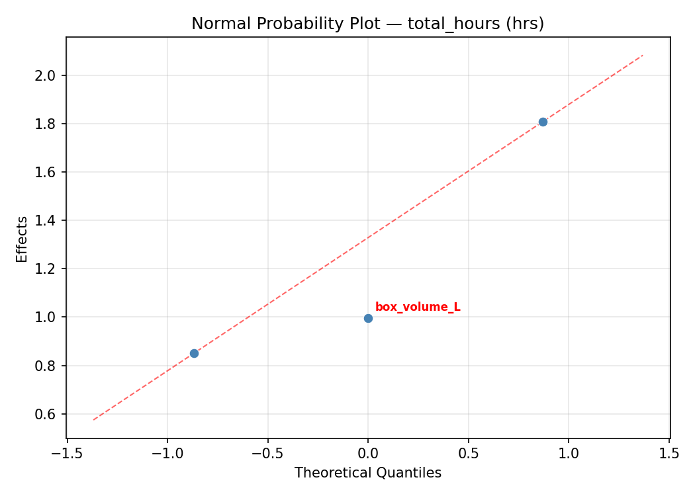
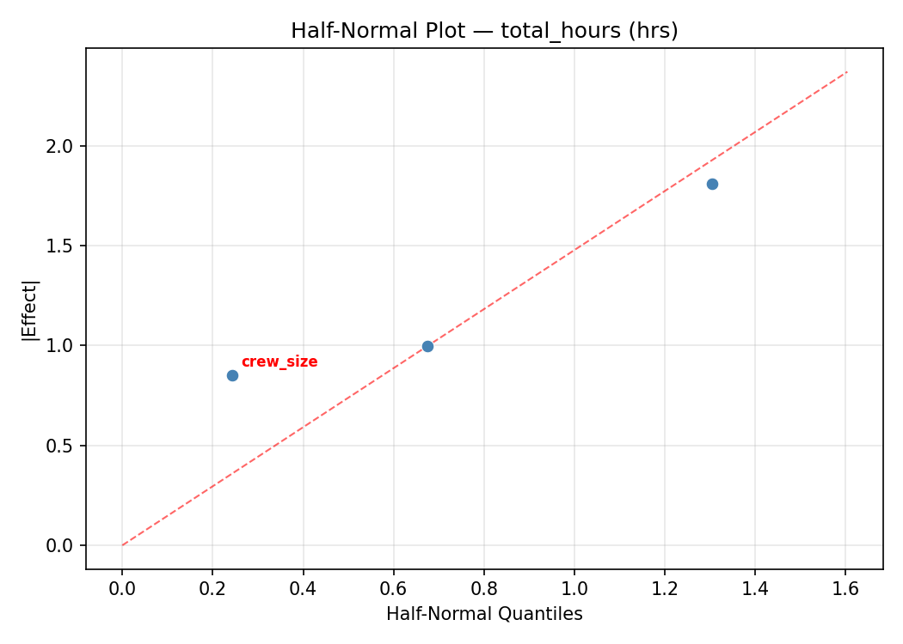
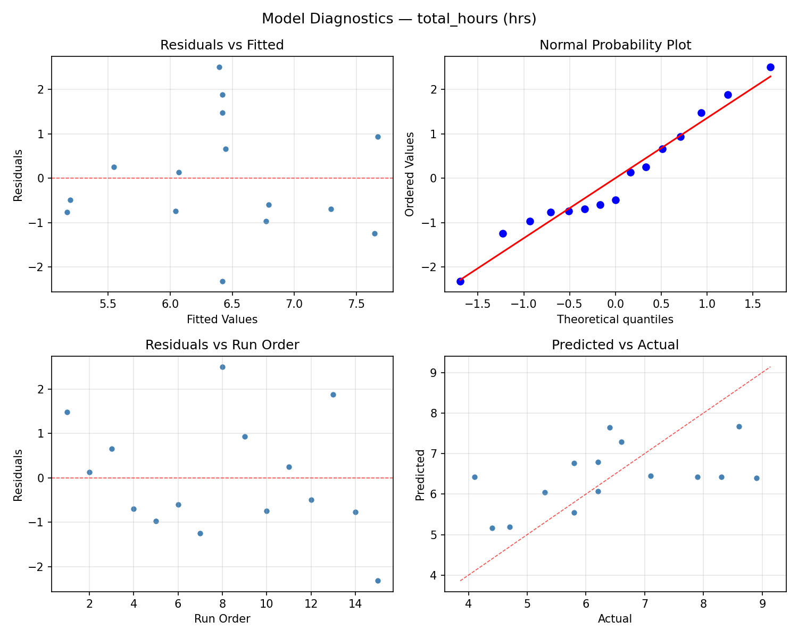
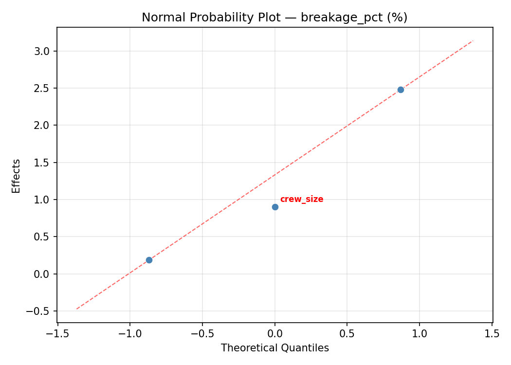
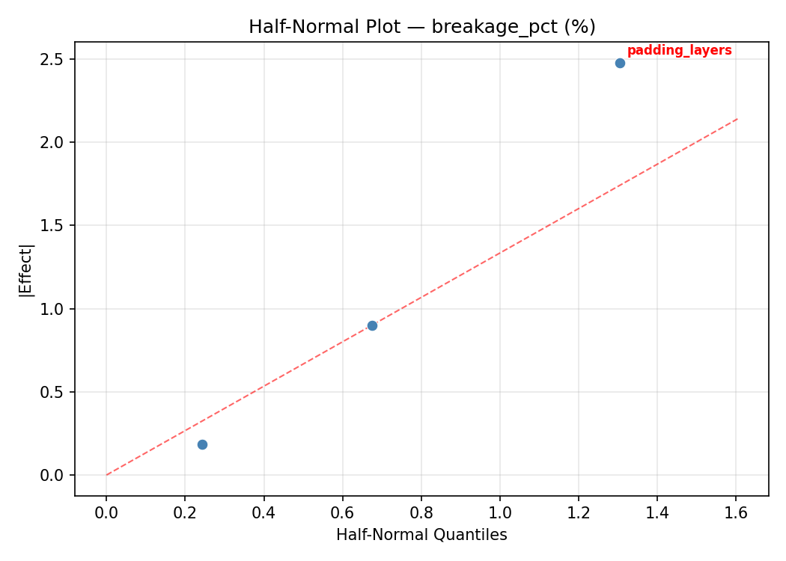
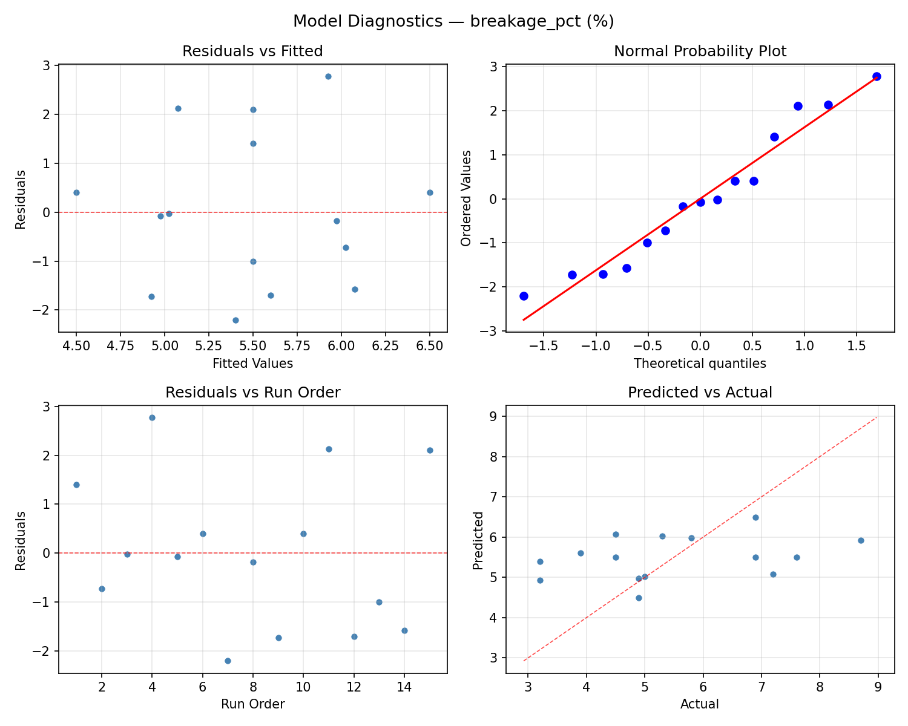

Summary
This experiment investigates moving day logistics. Box-Behnken design to minimize total move time and breakage by tuning box size, crew size, and truck loading strategy padding thickness.
The design varies 3 factors: box volume L (L), ranging from 30 to 80, crew size (people), ranging from 2 to 6, and padding layers (layers), ranging from 1 to 4. The goal is to optimize 2 responses: total hours (hrs) (minimize) and breakage pct (%) (minimize). Fixed conditions held constant across all runs include distance km = 20, apartment floor = 3.
A Box-Behnken design was chosen because it efficiently fits quadratic models with 3 continuous factors while avoiding extreme corner combinations — requiring only 15 runs instead of the 8 needed for a full factorial at two levels.
Quadratic response surface models were fitted to capture potential curvature and factor interactions. The RSM contour plots below visualize how pairs of factors jointly affect each response.
Key Findings
For total hours, the most influential factors were box volume L (51.0%), padding layers (39.3%), crew size (9.7%). The best observed value was 4.1 (at box volume L = 55, crew size = 2, padding layers = 4).
For breakage pct, the most influential factors were crew size (55.0%), box volume L (29.9%), padding layers (15.1%). The best observed value was 3.2 (at box volume L = 55, crew size = 4, padding layers = 2.5).
Recommended Next Steps
- Run confirmation experiments at the predicted optimal settings to validate the model.
- Consider whether any fixed factors should be varied in a future study.
Experimental Setup
Factors
| Factor | Low | High | Unit |
|---|
box_volume_L | 30 | 80 | L |
crew_size | 2 | 6 | people |
padding_layers | 1 | 4 | layers |
Fixed: distance_km = 20, apartment_floor = 3
Responses
| Response | Direction | Unit |
|---|
total_hours | ↓ minimize | hrs |
breakage_pct | ↓ minimize | % |
Configuration
{
"metadata": {
"name": "Moving Day Logistics",
"description": "Box-Behnken design to minimize total move time and breakage by tuning box size, crew size, and truck loading strategy padding thickness"
},
"factors": [
{
"name": "box_volume_L",
"levels": [
"30",
"80"
],
"type": "continuous",
"unit": "L"
},
{
"name": "crew_size",
"levels": [
"2",
"6"
],
"type": "continuous",
"unit": "people"
},
{
"name": "padding_layers",
"levels": [
"1",
"4"
],
"type": "continuous",
"unit": "layers"
}
],
"fixed_factors": {
"distance_km": "20",
"apartment_floor": "3"
},
"responses": [
{
"name": "total_hours",
"optimize": "minimize",
"unit": "hrs"
},
{
"name": "breakage_pct",
"optimize": "minimize",
"unit": "%"
}
],
"settings": {
"operation": "box_behnken",
"test_script": "use_cases/197_moving_day_logistics/sim.sh"
}
}
Experimental Matrix
The Box-Behnken Design produces 15 runs. Each row is one experiment with specific factor settings.
| Run | box_volume_L | crew_size | padding_layers |
|---|
| 1 | 55 | 2 | 1 |
| 2 | 55 | 4 | 2.5 |
| 3 | 80 | 4 | 4 |
| 4 | 80 | 4 | 1 |
| 5 | 55 | 4 | 2.5 |
| 6 | 55 | 4 | 2.5 |
| 7 | 30 | 4 | 4 |
| 8 | 80 | 2 | 2.5 |
| 9 | 55 | 2 | 4 |
| 10 | 80 | 6 | 2.5 |
| 11 | 30 | 4 | 1 |
| 12 | 55 | 6 | 4 |
| 13 | 30 | 2 | 2.5 |
| 14 | 30 | 6 | 2.5 |
| 15 | 55 | 6 | 1 |
Step-by-Step Workflow
1
Preview the design
$ python doe.py info --config use_cases/197_moving_day_logistics/config.json
2
Generate the runner script
$ python doe.py generate --config use_cases/197_moving_day_logistics/config.json \
--output use_cases/197_moving_day_logistics/results/run.sh --seed 42
3
Execute the experiments
$ bash use_cases/197_moving_day_logistics/results/run.sh
4
Analyze results
$ python doe.py analyze --config use_cases/197_moving_day_logistics/config.json
5
Get optimization recommendations
$ python doe.py optimize --config use_cases/197_moving_day_logistics/config.json
6
Multi-objective optimization
With 2 competing responses, use --multi to find the best compromise via Derringer–Suich desirability.
$ python doe.py optimize --config use_cases/197_moving_day_logistics/config.json --multi
7
Generate the HTML report
$ python doe.py report --config use_cases/197_moving_day_logistics/config.json \
--output use_cases/197_moving_day_logistics/results/report.html
Features Exercised
| Feature | Value |
|---|
| Design type | box_behnken |
| Factor types | continuous (all 3) |
| Arg style | double-dash |
| Responses | 2 (total_hours ↓, breakage_pct ↓) |
| Total runs | 15 |
Analysis Results
Generated from actual experiment runs using the DOE Helper Tool.
Response: total_hours
Top factors: box_volume_L (51.0%), padding_layers (39.3%), crew_size (9.7%).
ANOVA
| Source | DF | SS | MS | F | p-value |
|---|
| Source | DF | SS | MS | F | p-value |
| box_volume_L | 2 | 2.1754 | 1.0877 | 0.571 | 0.5862 |
| crew_size | 2 | 0.1097 | 0.0549 | 0.029 | 0.9717 |
| padding_layers | 2 | 1.2569 | 0.6284 | 0.330 | 0.7281 |
| Lack | of | Fit | 6 | 24.3153 | 4.0526 |
| Pure | Error | 2 | 3.8067 | | |
| Error | 8 | 28.1220 | 1.9033 | | |
| Total | 14 | 31.6640 | 2.2617 | | |
Pareto Chart

Main Effects Plot

Normal Probability Plot of Effects

Half-Normal Plot of Effects

Model Diagnostics

Response: breakage_pct
Top factors: crew_size (55.0%), box_volume_L (29.9%), padding_layers (15.1%).
ANOVA
| Source | DF | SS | MS | F | p-value |
|---|
| Source | DF | SS | MS | F | p-value |
| box_volume_L | 2 | 2.5854 | 1.2927 | 0.970 | 0.4197 |
| crew_size | 2 | 5.1307 | 2.5654 | 1.924 | 0.2079 |
| padding_layers | 2 | 0.6139 | 0.3070 | 0.230 | 0.7994 |
| Lack | of | Fit | 6 | 26.7033 | 4.4506 |
| Pure | Error | 2 | 2.6667 | | |
| Error | 8 | 29.3700 | 1.3333 | | |
| Total | 14 | 37.7000 | 2.6929 | | |
Pareto Chart

Main Effects Plot

Normal Probability Plot of Effects

Half-Normal Plot of Effects

Model Diagnostics

Response Surface Plots
3D surfaces fitted with quadratic RSM. Red dots are observed data points.
breakage pct box volume L vs crew size

breakage pct box volume L vs padding layers

breakage pct crew size vs padding layers

total hours box volume L vs crew size

total hours box volume L vs padding layers

total hours crew size vs padding layers

Multi-Objective Optimization
When responses compete, Derringer–Suich desirability finds the best compromise.
Each response is scaled to a 0–1 desirability, then combined via a weighted geometric mean.
Overall Desirability
D = 0.8397
Per-Response Desirability
| Response | Weight | Desirability | Predicted | Dir |
|---|
total_hours |
1.0 |
|
4.70 0.8409 4.70 hrs |
↓ |
breakage_pct |
1.5 |
|
3.90 0.8388 3.90 % |
↓ |
Recommended Settings
| Factor | Value |
|---|
box_volume_L | 55 L |
crew_size | 4 people |
padding_layers | 2.5 layers |
Source: from observed run #12
Trade-off Summary
Sacrifice = how much worse than single-objective best.
| Response | Predicted | Best Observed | Sacrifice |
|---|
breakage_pct | 3.90 | 3.20 | +0.70 |
Top 3 Runs by Desirability
| Run | D | Factor Settings |
|---|
| #14 | 0.7992 | box_volume_L=30, crew_size=6, padding_layers=2.5 |
| #7 | 0.7480 | box_volume_L=30, crew_size=2, padding_layers=2.5 |
Model Quality
| Response | R² | Type |
|---|
breakage_pct | 0.9429 | quadratic |
Full Multi-Objective Output
============================================================
MULTI-OBJECTIVE OPTIMIZATION
Method: Derringer-Suich Desirability Function
============================================================
Overall desirability: D = 0.8397
Response Weight Desirability Predicted Direction
---------------------------------------------------------------------
total_hours 1.0 0.8409 4.70 hrs ↓
breakage_pct 1.5 0.8388 3.90 % ↓
Recommended settings:
box_volume_L = 55 L
crew_size = 4 people
padding_layers = 2.5 layers
(from observed run #12)
Trade-off summary:
total_hours: 4.70 (best observed: 4.10, sacrifice: +0.60)
breakage_pct: 3.90 (best observed: 3.20, sacrifice: +0.70)
Model quality:
total_hours: R² = 0.0240 (linear)
breakage_pct: R² = 0.9429 (quadratic)
Top 3 observed runs by overall desirability:
1. Run #12 (D=0.8397): box_volume_L=55, crew_size=4, padding_layers=2.5
2. Run #14 (D=0.7992): box_volume_L=30, crew_size=6, padding_layers=2.5
3. Run #7 (D=0.7480): box_volume_L=30, crew_size=2, padding_layers=2.5
Full Analysis Output
=== Main Effects: total_hours ===
Factor Effect Std Error % Contribution
--------------------------------------------------------------
box_volume_L 0.9000 0.3883 51.0%
padding_layers 0.6929 0.3883 39.3%
crew_size 0.1714 0.3883 9.7%
=== ANOVA Table: total_hours ===
Source DF SS MS F p-value
-----------------------------------------------------------------------------
box_volume_L 2 2.1754 1.0877 0.571 0.5862
crew_size 2 0.1097 0.0549 0.029 0.9717
padding_layers 2 1.2569 0.6284 0.330 0.7281
Lack of Fit 6 24.3153 4.0526 2.129 0.3536
Pure Error 2 3.8067 1.9033
Error 8 28.1220 1.9033
Total 14 31.6640 2.2617
=== Summary Statistics: total_hours ===
box_volume_L:
Level N Mean Std Min Max
------------------------------------------------------------
30 4 7.0500 1.7972 4.7000 8.6000
55 7 6.2143 1.8078 4.1000 8.9000
80 4 6.1500 0.2517 5.8000 6.4000
crew_size:
Level N Mean Std Min Max
------------------------------------------------------------
2 4 6.5000 1.9613 4.1000 8.9000
4 7 6.3286 1.4092 4.7000 8.6000
6 4 6.5000 1.6432 4.4000 8.3000
padding_layers:
Level N Mean Std Min Max
------------------------------------------------------------
1 4 5.9500 2.0567 4.4000 8.9000
2.5 7 6.6429 1.0876 5.3000 8.3000
4 4 6.5000 1.8815 4.1000 8.6000
=== Main Effects: breakage_pct ===
Factor Effect Std Error % Contribution
--------------------------------------------------------------
crew_size 1.6000 0.4237 55.0%
box_volume_L 0.8679 0.4237 29.9%
padding_layers 0.4393 0.4237 15.1%
=== ANOVA Table: breakage_pct ===
Source DF SS MS F p-value
-----------------------------------------------------------------------------
box_volume_L 2 2.5854 1.2927 0.970 0.4197
crew_size 2 5.1307 2.5654 1.924 0.2079
padding_layers 2 0.6139 0.3070 0.230 0.7994
Lack of Fit 6 26.7033 4.4506 3.338 0.2484
Pure Error 2 2.6667 1.3333
Error 8 29.3700 1.3333
Total 14 37.7000 2.6929
=== Summary Statistics: breakage_pct ===
box_volume_L:
Level N Mean Std Min Max
------------------------------------------------------------
30 4 5.0750 2.4744 3.2000 8.7000
55 7 5.9429 1.2012 4.5000 7.6000
80 4 5.1500 1.6422 3.2000 7.2000
crew_size:
Level N Mean Std Min Max
------------------------------------------------------------
2 4 6.3250 2.4019 3.2000 8.7000
4 7 5.4714 1.5840 3.2000 7.2000
6 4 4.7250 0.2630 4.5000 5.0000
padding_layers:
Level N Mean Std Min Max
------------------------------------------------------------
1 4 5.3500 1.4663 3.9000 7.2000
2.5 7 5.7143 1.8641 3.2000 8.7000
4 4 5.2750 1.8062 3.2000 7.6000
Optimization Recommendations
=== Optimization: total_hours ===
Direction: minimize
Best observed run: #15
box_volume_L = 55
crew_size = 2
padding_layers = 4
Value: 4.1
RSM Model (linear, R² = 0.0242, Adj R² = -0.2419):
Coefficients:
intercept +6.4200
box_volume_L +0.0250
crew_size -0.1625
padding_layers +0.2625
RSM Model (quadratic, R² = 0.2146, Adj R² = -1.1991):
Coefficients:
intercept +5.6333
box_volume_L +0.0250
crew_size -0.1625
padding_layers +0.2625
box_volume_L*crew_size -0.4250
box_volume_L*padding_layers +0.3250
crew_size*padding_layers +0.6000
box_volume_L^2 +0.9083
crew_size^2 +0.3833
padding_layers^2 +0.1833
Curvature analysis:
box_volume_L coef=+0.9083 convex (has a minimum)
crew_size coef=+0.3833 convex (has a minimum)
padding_layers coef=+0.1833 convex (has a minimum)
Notable interactions:
crew_size*padding_layers coef=+0.6000 (synergistic)
box_volume_L*crew_size coef=-0.4250 (antagonistic)
box_volume_L*padding_layers coef=+0.3250 (synergistic)
Predicted optimum (from linear model, at observed points):
box_volume_L = 55
crew_size = 2
padding_layers = 4
Predicted value: 6.8450
Surface optimum (via L-BFGS-B, linear model):
box_volume_L = 30
crew_size = 6
padding_layers = 1
Predicted value: 5.9700
Model quality: Weak fit — consider adding center points or using a different design.
Factor importance:
1. box_volume_L (effect: 0.9, contribution: 47.3%)
2. padding_layers (effect: 0.5, contribution: 27.8%)
3. crew_size (effect: 0.5, contribution: 24.8%)
=== Optimization: breakage_pct ===
Direction: minimize
Best observed run: #7
box_volume_L = 55
crew_size = 4
padding_layers = 2.5
Value: 3.2
RSM Model (linear, R² = 0.1290, Adj R² = -0.1086):
Coefficients:
intercept +5.5000
box_volume_L -0.1875
crew_size -0.2875
padding_layers +0.7000
RSM Model (quadratic, R² = 0.6694, Adj R² = 0.0744):
Coefficients:
intercept +4.0000
box_volume_L -0.1875
crew_size -0.2875
padding_layers +0.7000
box_volume_L*crew_size -1.3250
box_volume_L*padding_layers -0.5500
crew_size*padding_layers -0.3000
box_volume_L^2 +0.8125
crew_size^2 +0.3625
padding_layers^2 +1.6375
Curvature analysis:
padding_layers coef=+1.6375 convex (has a minimum)
box_volume_L coef=+0.8125 convex (has a minimum)
crew_size coef=+0.3625 convex (has a minimum)
Notable interactions:
box_volume_L*crew_size coef=-1.3250 (antagonistic)
box_volume_L*padding_layers coef=-0.5500 (antagonistic)
Predicted optimum (from quadratic model, at observed points):
box_volume_L = 30
crew_size = 4
padding_layers = 4
Predicted value: 7.8875
Surface optimum (via L-BFGS-B, quadratic model):
box_volume_L = 78.5758
crew_size = 6
padding_layers = 2.55435
Predicted value: 3.3691
Model quality: Moderate fit — use predictions directionally, not precisely.
Factor importance:
1. padding_layers (effect: 2.3, contribution: 61.1%)
2. box_volume_L (effect: 0.9, contribution: 23.3%)
3. crew_size (effect: 0.6, contribution: 15.6%)